FILMOGRAFÍA
CINE
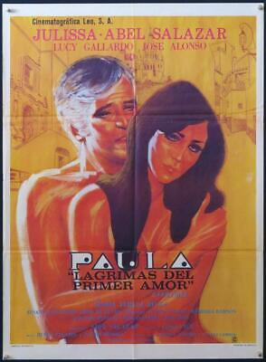
1968- Paula, lágrimas del primer amor
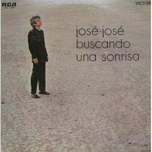
1971- Buscando una sonrisa
1972- Un sueño de amor
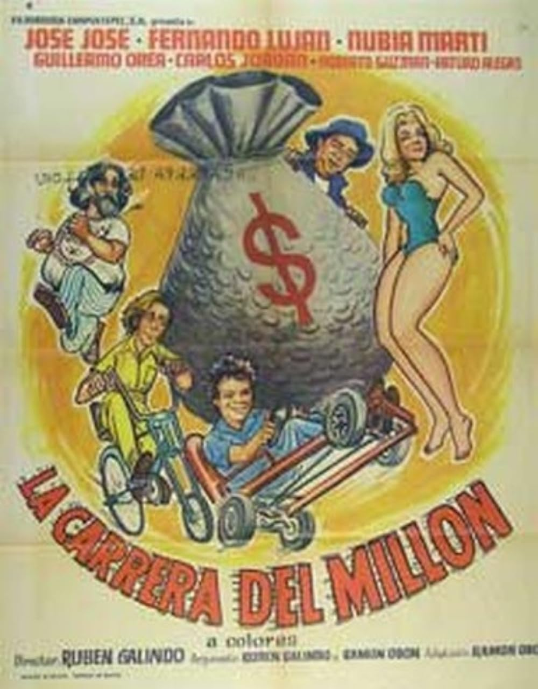
1973- La carrera del millón
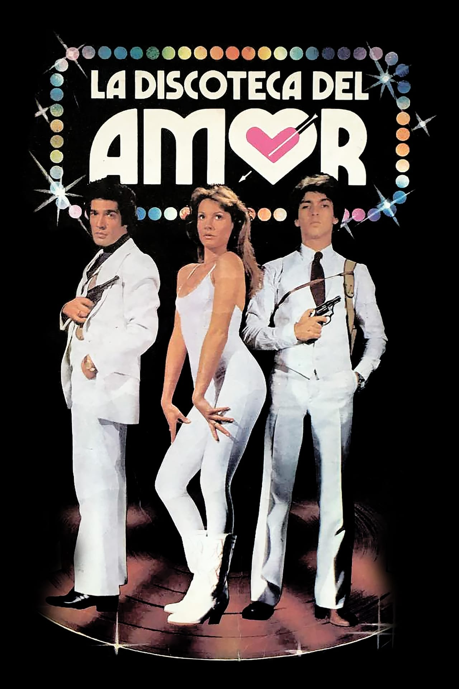
1980- La discoteca del amor
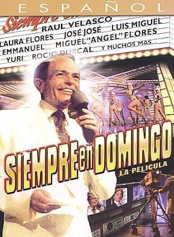
1984- Siempre en domingo: La película
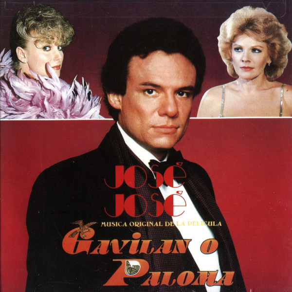
1985- Gavilán o palona
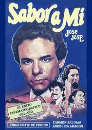
1988- Sabor a mí
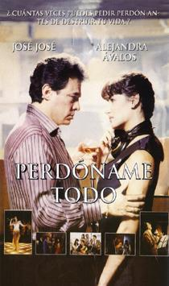
1995- Perdóname todo
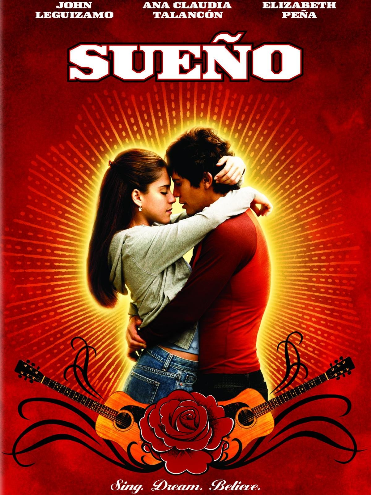
2005- Sueño
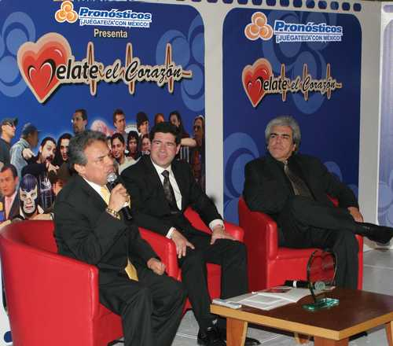
2009- Me late el corazón
Película - Gavilán o paloma (1985)
TELEVISIÓN
2018- José José, el príncipe de la canción (Telemundo)
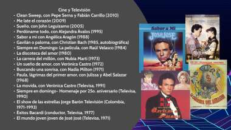
1977- Éxitos Bacardí (conductor, Televisa)
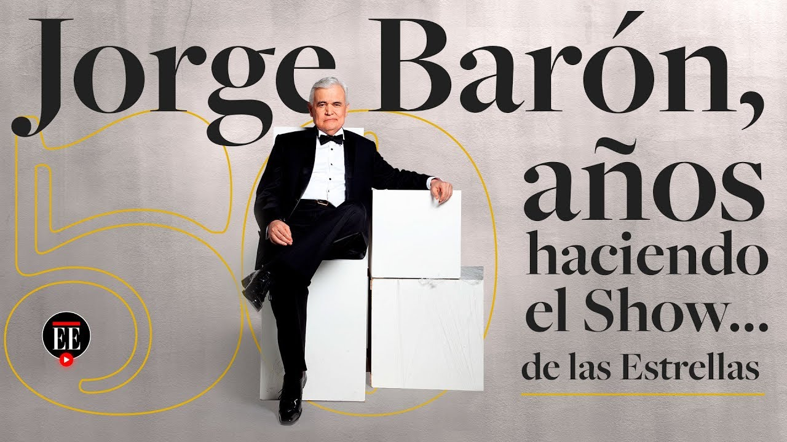
1971-1993- El show de las estrellas Jorge Barón Televisión
(Colombia)
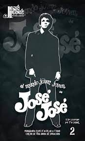
1971- El mundo joven joven de José José (Televis)